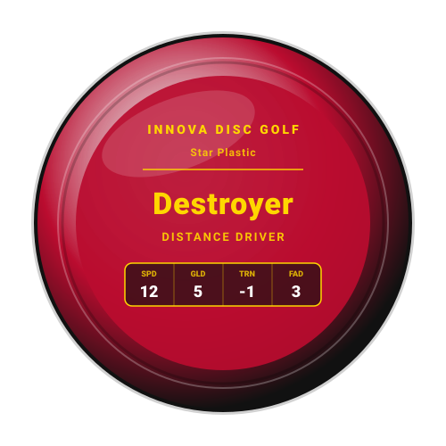

Personal Favorite

Innova Champion Discs
Destroyer
Speed
12
Glide
5
Turn
-1
Fade
3
- Plastic Blend: Star Plastic (175g)
- Stability: Overstable
- Recommended Skill: Advanced (375+ ft)
- Rim Width: 2.2 cm
- Bag Status: Primary Max Distance
The Innova Destroyer is the world's most iconic distance driver. Combining high-speed stability with massive glide and a punishing forward fade, it is capable of handling full-power torque without turning over into unwanted rollers.
Intended Fairway Use & Shot Role
Maximum distance backhand drives into headwind or open fields; spike hyzers around tree lines; skipping finishes on firm Georgia clay.